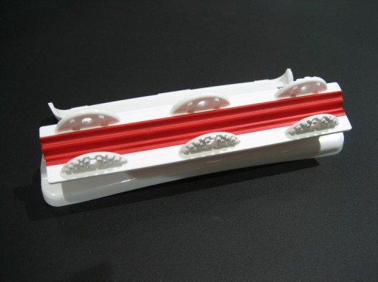
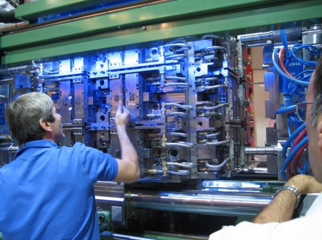
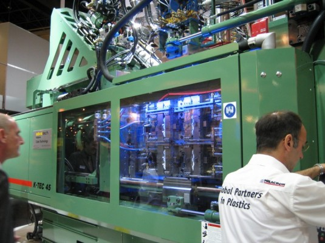
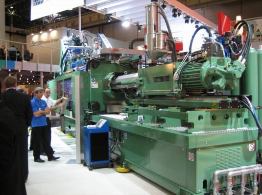

|
|
|
Birden çok arayüzlü kalýp "stack mold" uygulamalarý:
PLASTISUD manufacturing: 6+6 cavity stack mould for 250g Eurotub IML
Kaynak: www.youtube.com/watch?v=T797J-JAt44
PLASTISUD manufacturing: 16+16 cavity stack mould for Petri Dish Ø90mm
Kaynak: www.youtube.com/watch?v=lwiNotrU5k8
Real fast cycle time on a injection moulding machine
Kaynak: www.youtube.com/watch?v=prOdYIGxzaQ
2200 ton Husky Elite Machinery Systems
Kaynak: www.youtube.com/watch?v=81YZzxVYmyI
Klozet kapaðý için çift komponentli esnek menteþe kalýplamasý:
Aþaðýda, Almanya Düsseldorf K 2007 Fuarý'nda (International Trade Fair for Plastics and Rubber),
Ferromatik Milacron - Europe standýnda Metaal Magazine Dergisi'nden Reinold Tomberg tarafýndan 24 Ekim 2007'de çekilmiþ,
6x4 gözlü Foboha stack mold sistemi demosuna ait bir video yer alaktadýr.
Bu sistem ile klozet kapaklarýnda kullanýlmak üzere, çift komponentli malzemeden esnek menteþe üretimi yapýlmaktadýr;
Kaynak:
www.youtube.com/watch?v=gnn_nzp347A
(6x4-etagematrijs steelt show bij Ferromatik tijdens K 2007)




Ýlgili patent:
Bemis Manufacturing Co. firmasý bu menteþe sistemiyle ilgili olarak 12 Ekim 2007'de "Toilet seat hinge and method of manufacture" baþlýðýyla bir ABD patent baþvurusunda bulunmuþtur. 30 Nisan 2009'da yayýnlanan bu baþvuru ile ilgili tüm yazý ve resimlere US Patent office web sitesinden ulaþýlabilir (document number: 20090106884).
Aþaðýda, 8 parçalý konvansiyonel menteþe yerine tek parçalý bir tasarým ile 3 kanadýn esnek menteþe ile birbirine baðlandýðý bu patent baþvurusuna ait bazý resimler verilmiþtir:
Not: Bu ürün, patent baþvurusu yapýldýktan sonraki iki hafta içinde K 2007 Fuarý'nda sergilenmiþtir.
Ýlgili kaynaklar:
|
Not: Bu videolarýn yüksek kaliteli versiyonlarýný toplu olarak bilgisayarýnýza indirmek için týklayýnýz:
stack-mold-video.rar (18,7MB)
Kaynaklar:
- Mustafa Kurt, Ömer Þaban Kamber, Oðuz Girit - Ortak çalýþma özellikli ara plakalý ardýþýk kalýp sistemleri (stack mold), TurkCADCAM.net Dergisi, Ocak-Þubat 2006, Sayý:1, Sayfa: 86-89
- Herbert Rees, Mold Engineering,
Hanser Verlag, 2002, ISBN 3446216596, 9783446216594
- Yalçýn Çýnar, Plastik enjeksiyon kalýpçýlýðýnda verimlilik ve maliyet, TurkCADCAM.net Portalý, Aðustos 2006
- Automation, mold, pres team handles four–level stack mold, Plastics Machinery and Auxiliaries, March 2003 (www.stackteck.com)
- www.husky.ca
> Husky Injection Molding Systems Ltd.
- FOBOHA's New Double Turning-Cube Stack Mold System Produces Two Parts, from Two Materials, Assembles and Labels Them - in One Injection Machine > http://news.thomasnet.com/fullstory/458526
- Rotating Stack Mold Technology Offers Multi-Shot Capability, High-Volume Production > www.moldmakingtechnology.com/articles/1008spotlight.html
- Injection Molding & Tooling: Stack Molds Take on New Tasks, Plastics Technology > www.ptonline.com/articles/200203fa1.html
- advaltech / FOBOHA > High-end technology for high-performance molds; Adding value through innovation > www.awm.ch/uploads/tx_templavoila/FB_Brosch_e.pdf
|
|
|
|
TurkCADCAM.net > Türkiye'nin yeni ürün tasarım, geliştirme, CAD/CAM/CAE, CNC, kalıp ve imalat teknolojileri portalı |
*****
Sektörün profesyonel bilgi ve işbirliği platformu ***** |
|
|
|
|
|
|